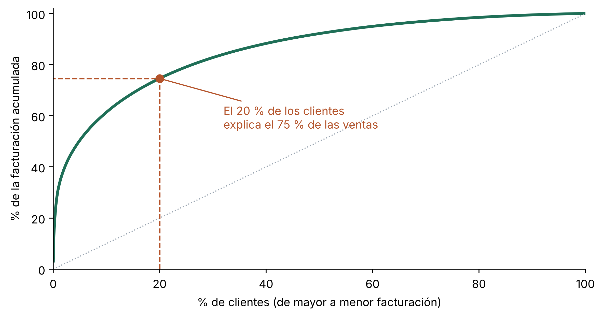
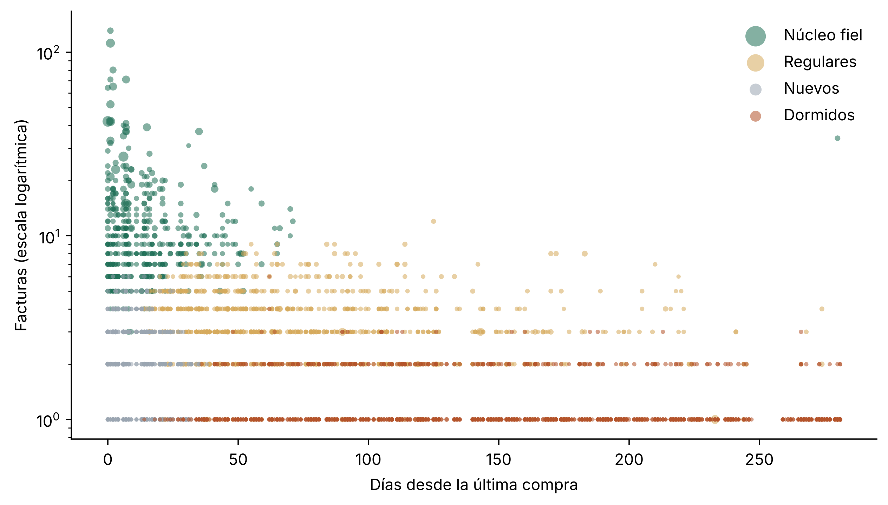
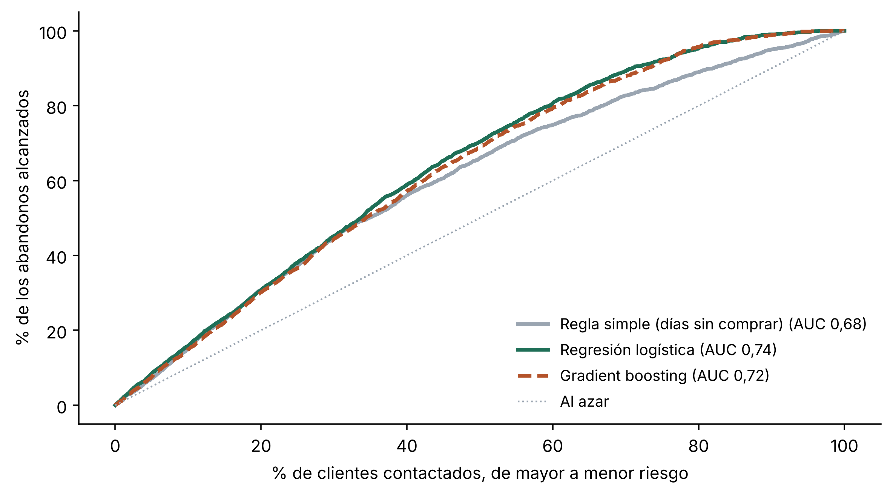
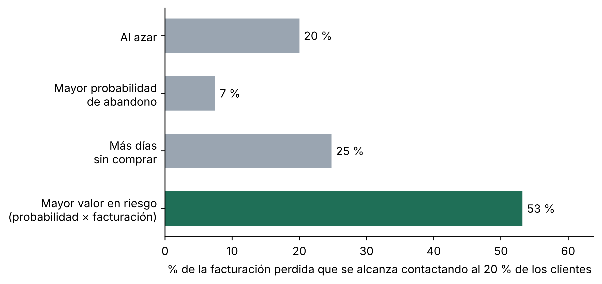

Hallazgos, segmentación y un modelo predictivo de abandono con las ventas reales de un mayorista en línea
Concentración de ventas, segmentación con k-medias y un modelo de abandono validado sobre un período que no vio, con datos públicos de más de 4.000 clientes.
Ciencia de datos
Machine learning
Segmentación
Python
Fecha de publicación
7 de noviembre de 2026
La pregunta del cliente
Un comercio mayorista vende en línea a varios miles de clientes. Su sistema registra cada factura desde hace un año, pero nadie la mira más allá del total mensual. La gerencia tiene una sospecha y una pregunta: algunos clientes dejaron de comprar sin avisar, ¿se puede saber de antemano quiénes son los próximos? Y, sobre todo, ¿a quiénes conviene llamar primero, si el equipo comercial no puede llamar a todos?
Este caso usa datos públicos reales: el conjunto Online Retail del repositorio de aprendizaje automático de la Universidad de California en Irvine (Chen, 2015, licencia CC BY 4.0), con todas las facturas de un comercio británico de artículos de regalo, cuyos clientes son en buena parte mayoristas, entre diciembre de 2010 y diciembre de 2011. Los importes están en libras esterlinas.
Ver código
import numpy as npimport pandas as pdimport matplotlib.pyplot as pltfrom sklearn.preprocessing import StandardScalerfrom sklearn.cluster import KMeansfrom sklearn.metrics import silhouette_score, roc_auc_scorefrom sklearn.linear_model import LogisticRegressionfrom sklearn.ensemble import HistGradientBoostingClassifierfrom sklearn.pipeline import make_pipelineTINTA, SELVA, TIERRA, ARENA, GRIS ="#1c2733", "#1f6f57", "#b4532a", "#d6aa5c", "#9aa5b1"def coma(x, dec=1):"""Número con coma decimal y punto de miles."""returnf"{x:,.{dec}f}".replace(",", "X").replace(".", ",").replace("X", ".")# Copia pública del conjunto Online Retail (UCI, doi:10.24432/C5BW33)URL = ("https://raw.githubusercontent.com/databricks/Spark-The-Definitive-Guide/""master/data/retail-data/all/online-retail-dataset.csv")crudo = pd.read_csv(URL, encoding="latin-1", dtype={"InvoiceNo": str, "StockCode": str, "CustomerID": "Int64"})crudo["InvoiceDate"] = pd.to_datetime(crudo.InvoiceDate, format="%m/%d/%Y %H:%M")# Limpieza: ventas identificadas, sin anulaciones ni cantidades o precios no positivosventas = crudo.dropna(subset=["CustomerID"])ventas = ventas[~ventas.InvoiceNo.str.startswith("C")& (ventas.Quantity >0) & (ventas.UnitPrice >0)].copy()ventas["importe"] = ventas.Quantity * ventas.UnitPriceresumen_datos = pd.Series({"Líneas de factura originales": len(crudo),"Líneas válidas tras la limpieza": len(ventas),"Facturas": ventas.InvoiceNo.nunique(),"Clientes": ventas.CustomerID.nunique(),"Facturación (libras)": round(ventas.importe.sum()),}).map(lambda x: coma(x, 0))resumen_datos.to_frame("Valor")
Valor
Líneas de factura originales
541.909
Líneas válidas tras la limpieza
397.884
Facturas
18.532
Clientes
4.338
Facturación (libras)
8.911.408
La limpieza descarta las líneas sin cliente identificado, las facturas anuladas y las devoluciones. Es un paso poco vistoso pero decisivo: un cliente que compra y luego devuelve no debe contarse dos veces como activo.
Paso 1. El primer hallazgo: de quién dependen las ventas
Antes de modelar conviene mirar. La curva de concentración ordena a los clientes de mayor a menor facturación y acumula su participación en el total.
Ver código
anual = ventas.groupby("CustomerID").importe.sum().sort_values(ascending=False)acum = anual.cumsum() / anual.sum()x = np.arange(1, len(anual) +1) /len(anual)top20 = acum.iloc[int(0.2*len(anual)) -1]fig, ax = plt.subplots(figsize=(7.5, 4))ax.plot(100* x, 100* acum.values, color=SELVA, linewidth=2.5)ax.plot([0, 100], [0, 100], color=GRIS, linestyle=":", linewidth=1)ax.plot([20, 20, 0], [0, 100* top20, 100* top20], color=TIERRA, linestyle="--", linewidth=1.2)ax.scatter([20], [100* top20], color=TIERRA, zorder=3, s=45)ax.annotate(f"El 20 % de los clientes\nexplica el {coma(100* top20, 0)} % de las ventas", (20, 100* top20), xytext=(32, 55), color=TIERRA, fontsize=10, arrowprops=dict(arrowstyle="-", color=TIERRA))ax.set_xlabel("% de clientes (de mayor a menor facturación)")ax.set_ylabel("% de la facturación acumulada")ax.set_xlim(0, 100); ax.set_ylim(0, 102)ax.spines[["top", "right"]].set_visible(False)plt.tight_layout()plt.show()

Figura 1: Curva de concentración de la facturación anual. El punto marca la participación del 20 % de clientes que más compra.
El 75 % de la facturación proviene del 20 % de los clientes. La consecuencia práctica aparece más adelante: perder a un cliente de ese grupo no equivale a perder a cualquiera, y un sistema de alerta que trate a todos por igual va a asignar mal el esfuerzo comercial.
Paso 2. Segmentación: grupos que piden estrategias distintas
Para segmentar se usan tres atributos clásicos, conocidos por la sigla RFM: recencia (días desde la última compra), frecuencia (cantidad de facturas) y monto (facturación acumulada). Se calculan con la información disponible al 9 de septiembre de 2011, se transforman con logaritmos para que los clientes muy grandes no dominen las distancias y se estandarizan. Luego se aplica el algoritmo de k-medias. En el cuadro, los días sin comprar y las facturas son medianas de cada grupo, y el abandono es el porcentaje de clientes que no volvió a comprar en los tres meses siguientes.
Ver código
def atributos(tx, corte):"""Atributos de cada cliente con la información disponible hasta la fecha de corte.""" h = tx[tx.InvoiceDate < corte] g = h.groupby("CustomerID") f = pd.DataFrame({"recencia": (corte - g.InvoiceDate.max()).dt.days,"frecuencia": g.InvoiceNo.nunique(),"monto": g.importe.sum(),"antiguedad": (corte - g.InvoiceDate.min()).dt.days,"productos": g.StockCode.nunique(), }) recientes = h[h.InvoiceDate >= corte - pd.Timedelta(days=90)].groupby("CustomerID").InvoiceNo.nunique() f["compras_90d"] = recientes.reindex(f.index).fillna(0) f["ticket"] = f.monto / f.frecuencia f["reino_unido"] = (g.Country.first() =="United Kingdom").astype(int)return fdef compran_entre(tx, desde, hasta):return tx[(tx.InvoiceDate >= desde) & (tx.InvoiceDate < hasta)].CustomerID.unique()corte_ent, corte_eval, fin = pd.Timestamp("2011-06-10"), pd.Timestamp("2011-09-09"), pd.Timestamp("2011-12-09")clientes = atributos(ventas, corte_eval)clientes["abandono"] = (~clientes.index.isin(compran_entre(ventas, corte_eval, fin))).astype(int)Z = StandardScaler().fit_transform(np.log1p(clientes[["recencia", "frecuencia", "monto"]]))silueta = {k: silhouette_score(Z, KMeans(k, n_init=20, random_state=1).fit_predict(Z)) for k inrange(3, 8)}km = KMeans(4, n_init=20, random_state=1).fit(Z)clientes["grupo"] = km.labels_# Nombres según el perfil de cada grupo (independientes de la numeración del algoritmo)perfil = clientes.groupby("grupo")[["recencia", "frecuencia", "antiguedad"]].median()nombres = {perfil.frecuencia.idxmax(): "Núcleo fiel", perfil.recencia.idxmax(): "Dormidos"}resto = perfil.drop(index=list(nombres)).sort_values("antiguedad")nombres[resto.index[0]] ="Nuevos"nombres[resto.index[1]] ="Regulares"clientes["segmento"] = clientes.grupo.map(nombres)ORDEN = ["Núcleo fiel", "Regulares", "Nuevos", "Dormidos"]COLOR_SEG =dict(zip(ORDEN, [SELVA, ARENA, GRIS, TIERRA]))seg = (clientes.groupby("segmento") .agg(clientes=("monto", "size"), recencia=("recencia", "median"), frecuencia=("frecuencia", "median"), facturacion=("monto", "sum"), abandono=("abandono", "mean")) .reindex(ORDEN))seg["pct_clientes"] =100* seg.clientes / seg.clientes.sum()seg["pct_facturacion"] =100* seg.facturacion / seg.facturacion.sum()pd.DataFrame({"Clientes": seg.clientes.map(lambda v: coma(v, 0)),"% de clientes": seg.pct_clientes.map(coma),"% de ventas": seg.pct_facturacion.map(coma),"Días sin comprar": seg.recencia.map(lambda v: coma(v, 0)),"Facturas": seg.frecuencia.map(lambda v: coma(v, 0)),"Abandono a 3 meses (%)": (100* seg.abandono).map(coma),}).rename_axis("Segmento")
Clientes
% de clientes
% de ventas
Días sin comprar
Facturas
Abandono a 3 meses (%)
Segmento
Núcleo fiel
460
13,7
58,8
11
9
7,0
Regulares
1.013
30,1
28,4
65
3
32,8
Nuevos
444
13,2
5,1
13
2
40,1
Dormidos
1.445
43,0
7,7
153
1
62,4
Se probaron entre tres y siete grupos. La cantidad elegida, cuatro, obtuvo el índice de silueta más alto entre esas opciones (0,37) y produce grupos que un equipo comercial puede reconocer y gestionar. Una solución con más grupos fragmentaría a los clientes sin aportar estrategias nuevas.
Ver código
fig, ax = plt.subplots(figsize=(8, 4.6))for s in ORDEN: d = clientes[clientes.segmento == s] ax.scatter(d.recencia, d.frecuencia, s=6+40* np.sqrt(d.monto / clientes.monto.max()), color=COLOR_SEG[s], alpha=0.55, edgecolor="none", label=s)ax.set_yscale("log")ax.set_xlabel("Días desde la última compra")ax.set_ylabel("Facturas (escala logarítmica)")ax.legend(frameon=False, markerscale=2.5, loc="upper right")ax.spines[["top", "right"]].set_visible(False)plt.tight_layout()plt.show()

Figura 2: Clientes según días desde la última compra y cantidad de facturas, coloreados por segmento. El tamaño de cada punto refleja su facturación.
El cuadro cuenta una historia clara. El núcleo fiel es el 14 % de los clientes y concentra el 59 % de la facturación; casi ninguno dejó de comprar. En el otro extremo, los dormidos son el grupo más numeroso, pero aportan poco y la mayoría no volvió. Los nuevos compraron hace poco pero pocas veces: son clientes que todavía no se decidieron, y su tasa de abandono, del 40 %, sugiere que los primeros meses de la relación son el momento crítico. Cada grupo pide una acción distinta: cuidar, reactivar, acompañar o, en el caso de los dormidos de bajo valor, no gastar recursos.
Paso 3. Un modelo que anticipa el abandono
Se define que un cliente abandona si no realiza ninguna compra en los tres meses siguientes a la fecha de corte. Para que la evaluación sea honesta, el modelo se entrena con la historia de compras hasta el 10 de junio de 2011 y lo que ocurrió en los tres meses siguientes, y se evalúa con la historia hasta el 9 de septiembre y lo que ocurrió entre septiembre y diciembre, un período que nunca vio. Es la situación real de uso: se aprende del pasado para anticipar lo que todavía no pasó.
Se comparan tres alternativas: una regla simple (los clientes con más días sin comprar son los de mayor riesgo), una regresión logística y un modelo de gradient boosting, estos dos últimos con ocho atributos de cada cliente: los tres de la segmentación más la antigüedad, la variedad de productos, el ticket promedio, las compras de los últimos 90 días y el país.
Ver código
entren = atributos(ventas, corte_ent)y_ent = (~entren.index.isin(compran_entre(ventas, corte_ent, corte_eval))).astype(int)y_eval = clientes.abandono.to_numpy()ATRIB = ["recencia", "frecuencia", "monto", "antiguedad", "productos", "compras_90d", "ticket", "reino_unido"]def preparar(X): Z = X[ATRIB].copy()for c in ["frecuencia", "monto", "productos", "ticket", "compras_90d"]: Z[c] = np.log1p(Z[c])return Zlogit = make_pipeline(StandardScaler(), LogisticRegression(max_iter=1000)).fit(preparar(entren), y_ent)boosting = HistGradientBoostingClassifier(max_depth=3, learning_rate=0.05, max_iter=300, random_state=1).fit(preparar(entren), y_ent)puntajes = {"Regla simple (días sin comprar)": clientes.recencia.to_numpy(),"Regresión logística": logit.predict_proba(preparar(clientes))[:, 1],"Gradient boosting": boosting.predict_proba(preparar(clientes))[:, 1],}auc = {k: roc_auc_score(y_eval, v) for k, v in puntajes.items()}pd.Series({k: coma(v, 3) for k, v in auc.items()}).rename_axis("Criterio").to_frame("AUC en el período de evaluación")
AUC en el período de evaluación
Criterio
Regla simple (días sin comprar)
0,682
Regresión logística
0,740
Gradient boosting
0,724
El área bajo la curva ROC (AUC) mide con qué frecuencia el modelo asigna más riesgo a un cliente que efectivamente abandonó que a uno que siguió comprando: 0,5 equivale a tirar una moneda y 1 a acertar siempre. La regresión logística alcanza 0,74, por encima de la regla simple (0,68). El modelo más sofisticado no supera al más simple, un resultado frecuente con pocos atributos y que conviene comprobar antes que suponer. El entrenamiento usó 2.800 clientes y la evaluación, 3.362.
Ver código
fig, ax = plt.subplots(figsize=(7.5, 4.2))estilos = {"Regla simple (días sin comprar)": (GRIS, "-"), "Regresión logística": (SELVA, "-"),"Gradient boosting": (TIERRA, "--")}for k, p in puntajes.items(): orden = np.argsort(-p) capt = np.concatenate([[0], np.cumsum(y_eval[orden]) / y_eval.sum()]) ax.plot(100* np.linspace(0, 1, len(capt)), 100* capt, color=estilos[k][0], linestyle=estilos[k][1], linewidth=2.2, label=f"{k} (AUC {coma(auc[k], 2)})")ax.plot([0, 100], [0, 100], color=GRIS, linestyle=":", linewidth=1, label="Al azar")ax.set_xlabel("% de clientes contactados, de mayor a menor riesgo")ax.set_ylabel("% de los abandonos alcanzados")ax.legend(frameon=False, fontsize=9, loc="lower right")ax.spines[["top", "right"]].set_visible(False)plt.tight_layout()plt.show()

Figura 3: Curva de ganancia en el período de evaluación: qué proporción de los clientes que efectivamente abandonaron se alcanza al contactar a un porcentaje creciente de la cartera, ordenada por riesgo.
Un detalle del contexto: el período de evaluación incluye la temporada de fin de año, cuando más clientes vuelven a comprar. Por eso la tasa de abandono observada (43 %) es menor que la del período de entrenamiento (52 %). En un trabajo real, el modelo se recalibra cada temporada.
Paso 4. No a quién es más probable perder, sino a quién más cuesta perder
Aquí está el hallazgo que cambia la estrategia. Si el equipo comercial llama al 20 % de clientes con mayor probabilidad de abandono, llega casi exclusivamente a dormidos de bajo valor. En cambio, si prioriza por valor en riesgo, es decir, la probabilidad de abandono multiplicada por lo que el cliente facturó, el mismo esfuerzo alcanza una porción mucho mayor de la facturación que efectivamente se perdió.
Ver código
p = puntajes["Regresión logística"]monto = clientes.monto.to_numpy()perdida = y_eval * montocriterios = {"Al azar": None,"Mayor probabilidad\nde abandono": p,"Más días\nsin comprar": clientes.recencia.to_numpy(),"Mayor valor en riesgo\n(probabilidad × facturación)": p * monto,}k20 =int(0.2*len(clientes))captura = {k: (0.2if s isNoneelse perdida[np.argsort(-s)[:k20]].sum() / perdida.sum())for k, s in criterios.items()}cap_prob, cap_rec, cap_valor =list(captura.values())[1:]top_prob = clientes.iloc[np.argsort(-p)[:k20]].segmento.value_counts(normalize=True)top_valor = clientes.iloc[np.argsort(-(p * monto))[:k20]].segmento.value_counts(normalize=True)fig, ax = plt.subplots(figsize=(7.5, 3.6))cols = [GRIS, GRIS, GRIS, SELVA]barras = ax.barh(list(captura)[::-1], [100* v for v in captura.values()][::-1], color=cols[::-1], height=0.6)ax.bar_label(barras, labels=[f"{coma(100* v, 0)} %"for v inlist(captura.values())[::-1]], padding=4)ax.set_xlabel("% de la facturación perdida que se alcanza contactando al 20 % de los clientes")ax.set_xlim(0, 100*max(captura.values()) *1.2)ax.spines[["top", "right"]].set_visible(False)plt.tight_layout()plt.show()

Figura 4: Porcentaje de la facturación de los clientes que efectivamente abandonaron que se alcanza al contactar al 20 % de la cartera, según el criterio de prioridad.
Con el mismo número de llamadas, priorizar por valor en riesgo alcanza el 53 % de la facturación perdida, contra el 25 % de la regla de los días sin comprar y apenas el 7 % de quien mira solo la probabilidad. Cuando se prioriza por probabilidad, el 98 % de las llamadas va a parar a dormidos. La lista por valor en riesgo, en cambio, está formada en un 67 % por clientes regulares: compradores de valor medio que empiezan a espaciar sus compras, el grupo donde una llamada a tiempo más puede cambiar el resultado. El modelo, por sí solo, no decide nada: lo que genera valor es combinarlo con una pregunta de negocio bien planteada.
Qué recibe el cliente
Un diagnóstico de concentración de las ventas y una segmentación de la cartera con el perfil y la acción sugerida para cada grupo.
Un listado mensual de clientes ordenado por valor en riesgo, listo para el equipo comercial, con la probabilidad de abandono y el segmento de cada uno.
El modelo documentado, con su validación sobre un período que no vio y un procedimiento para actualizarlo cada temporada.
La lección práctica: un modelo predictivo vale lo que vale su validación, y rinde cuando responde a la pregunta correcta: no a quién es más probable perder, sino a quién más cuesta perder.
Fuente de los datos: Chen, D. (2015). Online Retail [conjunto de datos]. UCI Machine Learning Repository. https://doi.org/10.24432/C5BW33. Licencia CC BY 4.0.